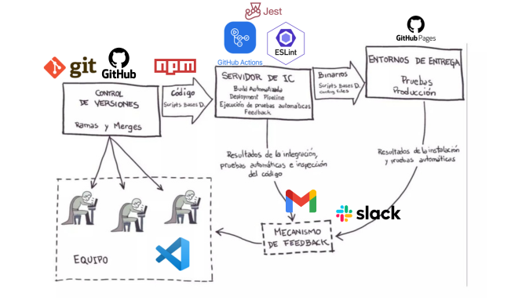

Bienvenido a ICFlor
Una aplicación web moderna construida con mejores prácticas de desarrollo
¿Qué es ICFlor?
🎯 Objetivo
ICFlor es más que una aplicación web simple. Es una demostración completa de ingeniería de software profesional, implementando un pipeline de CI/CD automatizado que garantiza calidad en cada línea de código.
✨ Enfoque
Demostramos que incluso proyectos pequeños pueden beneficiarse de prácticas profesionales: testing automatizado, linting, control de versiones y despliegue continuo.
Características Técnicas
Testing Automatizado
Jest para garantizar que cada función funciona correctamente
Linting & Code Quality
ESLint asegura código limpio y consistente en todo el proyecto
CI/CD Pipeline
GitHub Actions valida y despliega automáticamente cada cambio
Build Optimizado
Babel transpila para compatibilidad con navegadores antiguos
GitHub Pages
Despliegue automático en cada push a la rama principal
Slack Notifications
Notificaciones en tiempo real del estado del pipeline
Stack Tecnológico
ICFlor está construido con las herramientas más modernas del ecosistema JavaScript:
Frontend
HTML5, CSS3, JavaScript ES6+
Testing
Jest + Babel-Jest
Code Quality
ESLint + @eslint/js
Build
Babel @babel/core & @babel/preset-env
Version Control
Git + GitHub
CI/CD
GitHub Actions + GitHub Pages
Pipeline de Desarrollo
La siguiente imagen muestra nuestro flujo de trabajo completo:

*Haz clic en la imagen para ampliarla